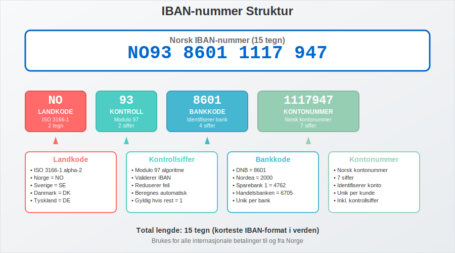
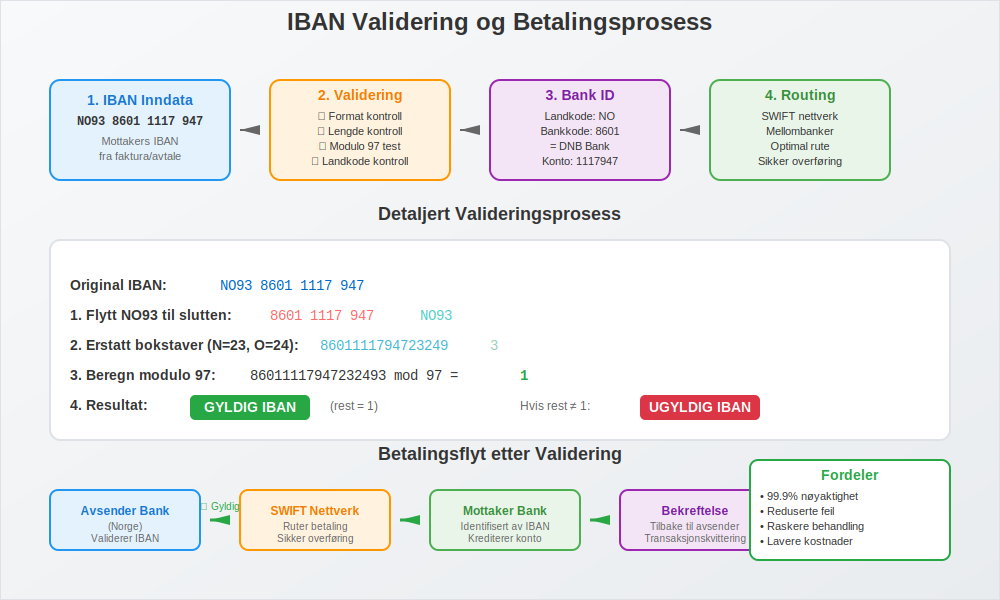
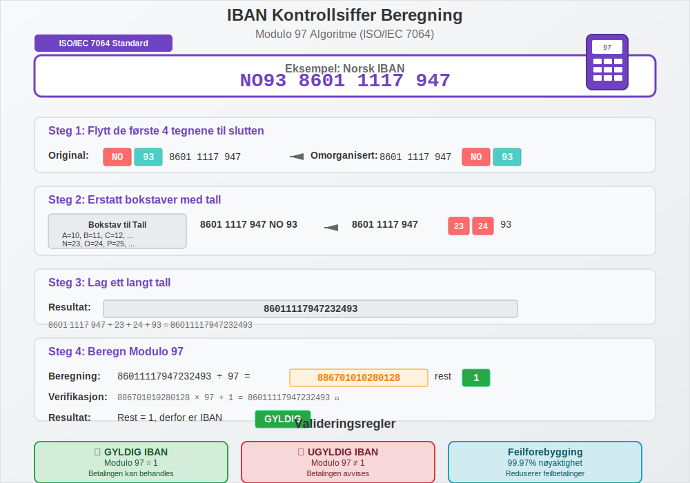
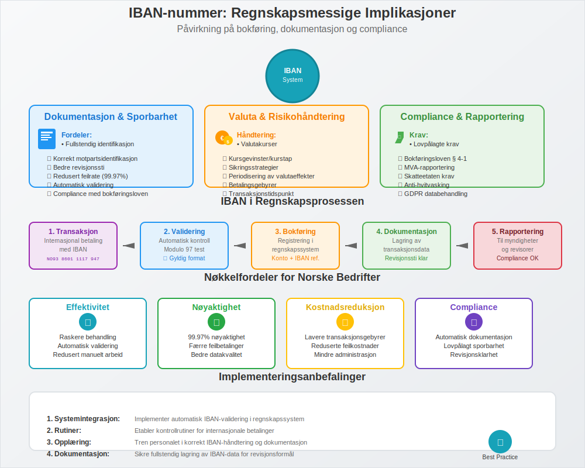

IBAN-nummer (International Bank Account Number) er en internasjonal standard som brukes for å identifisere bankkonti ved grenseoverskridende betalinger og finansielle transaksjoner. For norske bedrifter som driver med internasjonal handel, er forståelse av IBAN-numre essensielt for korrekt håndtering av banktransaksjoner og internasjonale betalinger.
IBAN-nummeret fungerer som en standardisert måte å identifisere bankkonti på tvers av landegrenser og er uunnværlig for korrekt bokføring av internasjonale transaksjoner og oppfyllelse av regnskapsmessige krav.
Hva er IBAN-nummer?
IBAN-nummer står for International Bank Account Number og er en internasjonal standard (ISO 13616) som ble utviklet for å forenkle og standardisere internasjonale betalinger. Denne koden er en unik identifikator som sikrer at internasjonale betalinger når frem til riktig bankkonto hos riktig mottaker.

IBAN-nummerets Struktur
Et IBAN-nummer består av opptil 34 tegn og er bygget opp som følger:
| Posisjon | Lengde | Beskrivelse | Norsk Eksempel |
|---|---|---|---|
| 1-2 | 2 tegn | Landkode - ISO 3166-1 alpha-2 | NO |
| 3-4 | 2 siffer | Kontrollsiffer - For validering | 93 |
| 5-8 | 4 siffer | Bankkode - Identifiserer banken | 8601 |
| 9-15 | 7 siffer | Kontonummer - Identifiserer kontoen | 1117947 |
Norske IBAN-numre
Norge har 15-sifret IBAN-numre som følger et fast mønster. Her er strukturen for norske IBAN-numre:
| Bank | Bankkode | Eksempel IBAN | Forklaring |
|---|---|---|---|
| DNB | 8601 | NO93 8601 1117 947 | DNB Bank ASA |
| Nordea | 2000 | NO53 2000 1234 567 | Nordea Bank Norge ASA |
| Sparebank 1 | 4762 | NO76 4762 1234 567 | Sparebank 1 SR-Bank |
| Handelsbanken | 6705 | NO12 6705 1234 567 | Svenska Handelsbanken |
IBAN-nummerets Rolle i Internasjonale Betalinger
IBAN-numre er fundamentale for SEPA-betalinger (Single Euro Payments Area) og andre internasjonale betalingssystemer. For norske bedrifter betyr dette sikker og sporbar overføring av betalingsmidler på tvers av landegrenser.

Hvordan IBAN-numre Fungerer i Praksis
Når en norsk bedrift skal sende en internasjonal betaling med IBAN, skjer følgende prosess:
- Validering: IBAN-nummeret valideres ved hjelp av kontrollsifrene
- Identifikasjon: Landkode og bankkode identifiserer mottakers bank
- Routing: Betalingen rutes til riktig bank og konto
- Levering: Betalingen ankommer mottakers spesifikke bankkonto
- Konfirmasjon: Bekreftelse sendes tilbake til avsender
Dette systemet sikrer at banktransaksjoner kan spores og dokumenteres korrekt for regnskapsformål.
IBAN-nummer vs. BIC-kode - Forskjeller og Sammenheng
Mens IBAN-nummeret identifiserer den spesifikke kontoen, identifiserer BIC-koden banken. Begge er ofte nødvendige for internasjonale betalinger:
| Aspekt | IBAN-nummer | BIC-kode |
|---|---|---|
| Formål | Identifiserer spesifikk bankkonto | Identifiserer bank/finansinstitusjon |
| Lengde | Opptil 34 tegn (15 i Norge) | 8 eller 11 tegn |
| Struktur | Landkode + Kontrollsiffer + Bankkode + Kontonummer | Bankkode + Landkode + Stedkode + Filialkode |
| Eksempel | NO93 8601 1117 947 | DNBANOKKXXX |
| Validering | Innebygd kontrollsiffer-algoritme | Ingen innebygd validering |
Praktisk Anvendelse
For en komplett internasjonal betaling trenger du ofte:
- IBAN-nummer for å identifisere mottakers spesifikke konto
- BIC-kode for å identifisere mottakers bank
- Betalingsreferanse for korrekt avstemming
IBAN-validering og Kontrollsiffer
En av de viktigste fordelene med IBAN-systemet er den innebygde valideringsmekanismen som reduserer feil i internasjonale betalinger betydelig.

Hvordan IBAN-validering Fungerer
IBAN-validering bruker modulo 97-algoritmen (ISO/IEC 7064):
- Flytt de fire første tegnene til slutten av IBAN-nummeret
- Erstatt bokstaver med tall (A=10, B=11, C=12, osv.)
- Beregn resten når tallet deles på 97
- Gyldig IBAN hvis resten er 1
Eksempel på IBAN-validering
For norsk IBAN NO93 8601 1117 947:
| Steg | Handling | Resultat |
|---|---|---|
| 1 | Flytt NO93 til slutten | 86011117947NO93 |
| 2 | Erstatt N=23, O=24 | 860111179472324 93 |
| 3 | Beregn modulo 97 | 860111179472324 93 mod 97 = 1 |
| 4 | Validering | Gyldig (rest = 1) |
Regnskapsmessige Implikasjoner av IBAN-numre
For norske bedrifter har IBAN-numre flere viktige regnskapsmessige implikasjoner som påvirker både bokføring og internkontroll.

Dokumentasjon og Sporbarhet
IBAN-numre bidrar til:
- Fullstendig identifikasjon av mottakers bankkonto
- Redusert feilrate i internasjonale betalinger
- Bedre sporbarhet av transaksjoner for revisjonsformål
- Korrekt identifikasjon av motparter i regnskapet
- Overholdelse av bokføringslovens krav til dokumentasjon
Valutahåndtering og Internasjonale Transaksjoner
Ved internasjonale betalinger med IBAN-numre må bedrifter håndtere:
- Valutakurser på transaksjonstidspunktet
- Kursgevinster og kurstap i regnskapet
- Sikringsstrategier for valutarisiko
- Periodisering av valutaeffekter
- Betalingsgebyrer og deres regnskapsmessige behandling
MVA og Grenseoverskridende Tjenester
Ved bruk av IBAN for betaling av fjernleverbare tjenester må bedrifter være oppmerksomme på:
- MVA-regler for grenseoverskridende levering
- Dokumentasjonskrav for MVA-fritak
- Rapportering til norske myndigheter
IBAN-numre i Norsk Banksektor
Den norske banksektoren har implementert IBAN-numre som en integrert del av det internasjonale betalingssystemet. Dette påvirker hvordan norske bedrifter håndterer bankinnskudd og internasjonale transaksjoner.
Norske IBAN-standarder
Norske IBAN-numre følger et konsistent mønster:
- Landkode: Alltid “NO” for Norge
- Kontrollsiffer: Beregnet etter modulo 97-algoritmen
- Bankkode: 4-sifret kode som identifiserer banken
- Kontonummer: 7-sifret norsk kontonummer
Implementering i Norske Betalingssystemer
Norske banker har integrert IBAN-numre i:
- Nettbanktjenester for privatpersoner og bedrifter
- BankGiro-systemet for internasjonale betalinger
- Regnskapssystemer for automatisk bokføring
- Rapporteringssystemer for myndighetskrav
IBAN-numre i Ulike Land
IBAN-systemet brukes i 77 land verden over, med varierende lengde og struktur. Her er noen eksempler:
| Land | IBAN-lengde | Eksempel | Særtrekk |
|---|---|---|---|
| Norge | 15 tegn | NO93 8601 1117 947 | Kort og effektiv |
| Tyskland | 22 tegn | DE89 3704 0044 0532 0130 00 | Lang og detaljert |
| Frankrike | 27 tegn | FR14 2004 1010 0505 0001 3M02 606 | Inkluderer RIB-kode |
| Storbritannia | 22 tegn | GB29 NWBK 6016 1331 9268 19 | Sortcode + kontonummer |
| Sverige | 24 tegn | SE45 5000 0000 0583 9825 7466 | Clearingnummer + konto |
SEPA-området og IBAN
SEPA (Single Euro Payments Area) omfatter 36 land og krever IBAN for alle betalinger. Norge er medlem av SEPA, noe som betyr:
- Standardiserte betalinger innen SEPA-området
- Lave kostnader for EUR-betalinger
- Rask behandling av betalinger
- Ensartede regler for betalingstjenester
Praktiske Råd for Bedrifter
For norske bedrifter som håndterer internasjonale transaksjoner med IBAN-numre, er det viktig å etablere gode rutiner:
Beste Praksis for IBAN-håndtering
- Valider alltid IBAN-numre før du sender betalinger
- Bruk automatisk validering i regnskapssystemer
- Oppbevar dokumentasjon av alle internasjonale transaksjoner
- Implementer kontrollrutiner for å unngå feil i IBAN-numre
- Tren personalet i korrekt bruk av IBAN-numre
Vanlige Feil og Hvordan Unngå Dem
De mest vanlige feilene ved bruk av IBAN-numre inkluderer:
- Feil IBAN-nummer: Kan føre til forsinkede eller returnerte betalinger
- Manglende IBAN-nummer: Kan resultere i ekstra gebyrer eller avvist betaling
- Feil formatering: Mellomrom eller bindestreker på feil steder
- Utdaterte IBAN-numre: Kontoer kan endres ved bankskifter
Kontrollrutiner for IBAN-numre
Etabler følgende kontrollrutiner:
- Automatisk IBAN-validering i betalingssystemer
- Dobbel verifikasjon av IBAN-numre før betaling
- Regelmessig oppdatering av mottakerdatabase
- Attestering av internasjonale betalinger
- Oppfølging av betalingsstatus
IBAN og Digitalisering
IBAN-systemet utvikler seg kontinuerlig for å møte nye krav i det digitale finanssystemet. Viktige utviklingstrender inkluderer:
Teknologiske Innovasjoner
- API-integrasjoner for sanntids IBAN-validering
- Automatisk IBAN-generering fra kontonumre
- QR-koder med innebygd IBAN-informasjon
- Blockchain-teknologi for økt sikkerhet og sporbarhet
Regulatoriske Endringer
- PSD2-direktivet og åpen bankvirksomhet
- Økt rapporteringskrav for internasjonale transaksjoner
- Strengere KYC-krav (Know Your Customer)
- Anti-hvitvasking regulering
- GDPR-compliance for databehandling
Fremtiden for IBAN-systemet
IBAN-systemet står overfor flere utviklingstrender som vil påvirke hvordan norske bedrifter håndterer internasjonale betalinger:
Utvidelse og Standardisering
- Flere land adopterer IBAN-standarden
- Forbedret validering og feildeteksjon
- Integrering med nye betalingsteknologier
- Harmonisering av internasjonale betalingsstandarder
Digitale Betalingsløsninger
- Instant payments med IBAN-identifikasjon
- Mobile betalinger med IBAN-integrasjon
- Kryptovaluta-broer til tradisjonelle IBAN-systemer
- AI-drevet betalingsoptimalisering
Konklusjon
IBAN-numre er en fundamental komponent i det moderne internasjonale finanssystemet og spiller en kritisk rolle for norske bedrifter som driver med grenseoverskridende handel. Korrekt forståelse og anvendelse av IBAN-numre sikrer:
- Effektive internasjonale betalinger med redusert feilrate
- Korrekt regnskapsføring av internasjonale transaksjoner
- Overholdelse av regulatoriske krav
- God internkontroll og sporbarhet
- Kostnadseffektive grenseoverskridende betalinger
For bedrifter som ønsker å optimalisere sin håndtering av internasjonale betalinger, er det essensielt å etablere robuste rutiner for IBAN-numre som en del av den overordnede bankavstemming og regnskapsprosessen.
Ved å følge beste praksis og holde seg oppdatert på utviklingen innen IBAN-systemet, kan norske bedrifter sikre smidig og sikker håndtering av sine internasjonale finansielle transaksjoner. Kombinert med korrekt bruk av BIC-koder, gir IBAN-numre et solid fundament for moderne internasjonal betalingshåndtering.